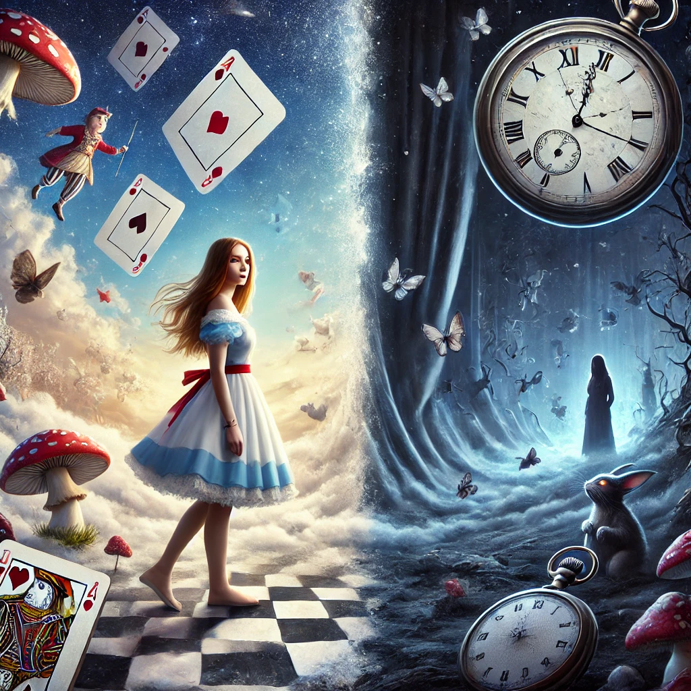

앨리스 죽이기
목차
작가
고바야시 야스미
출판일
2013년
감상평에 대한 AI그림
앨리스 죽이기는 복잡하지 않은 가볍게 읽기좋은 추리소설이다.
현실과 꿈속 세계 두 세계를 왔다 갔다 하는 독특한 설정이 재밌었고,
마지막 부분 묘사가 생생하고 잔인해서 충격적이였다.

감상평에 대한 AI평가
~~~~AI평가~~~~~
✨ 이 감상평은 **'앨리스 죽이기'**의 매력을 잘 담고 있습니다.
✨ 가볍게 읽기 좋은 추리소설이라는 점을 강조하며, 독특한 설정과 긴장감 넘치는 전개를 흥미롭게 표현했습니다.
✨ 마지막 부분의 강렬한 묘사까지 인상적으로 전달하여 작품의 몰입감을 잘 나타낸 감상평입니다.